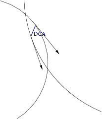

Distance of Closest Approach
These routines return the distance of closest approach between two tracks in three dimensions.

Functions:
real dca
dca = tlidca(par1,par2)
input variables:
par1
real(5); an array holding the parameters of the first track.
The track parameters follow the ZEUS convention(ΦH, Q/R, QDH, ZH,cot θ).
par2
real(5); an array holding the parameters of the second track.
The track parameters follow the ZEUS convention(ΦH, Q/R, QDH, ZH,cot θ).
output variables:
dca = tlidcav(par1,par2,v)
input variables:
par1
real(5); an array holding the parameters of the first track.
The track parameters follow the ZEUS convention(ΦH, Q/R, QDH, ZH,cot θ).
par2
real(5); an array holding the parameters of the second track.
The track parameters follow the ZEUS convention(ΦH, Q/R, QDH, ZH,cot θ).
output variables:
v
real(3); midpoint of the tracks at closest approach
Hartmut Stadie
Last modified: Fri Oct 14 13:47:44 CEST 2005